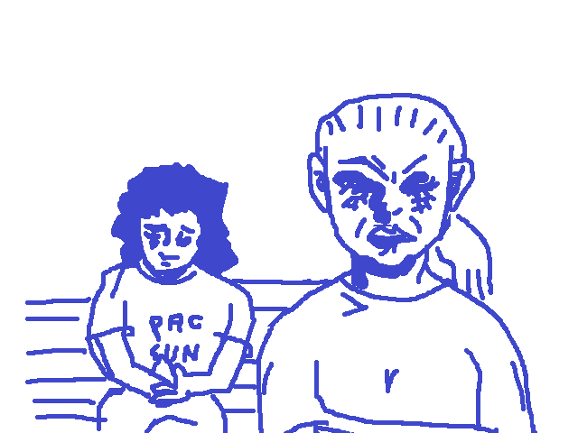

“Maddy…I just wanted to say, I mean…I guess you don’t really know me, and you’ve been hanging out with Emma a lot…”
“Um…what?” Samantha interjects, a distinct note of derision creeping into her tone.
“I mean…you know, Maddy. You know her. You know…you have to know. It’s not true. What she’s been saying.”
You can’t believe you actually get the words out. You can feel your cheeks flushing. But you did it. You glance at the girls. Samantha’s mouth is hanging open. Her expression is angry, but you can tell it’s not real. Samantha doesn’t care about any of this, about you or Emma, but the dramatics are too much for her to pass up. In her eyes, you can see another emotion…glee?
Maddy is looking down. You can’t tell what she’s thinking.
“Are you serious right now? Get out of here with that bullshit!” Samantha cries. She’s standing up now. “I can’t believe you say shit like that about our friend and think you can just confront us like this. You can’t just say shit like that and think everyone will still want to be around you. No one fucks with you!”
The irony of her criticism is almost funny to you. You briefly consider bringing up @lw.caughtlacking, but decide against it. Better get out of this interaction while you still can.
“Um…okay. See you.” you say. Your response was kind of lame, but you really had no idea what to say. The fire that fueled you to confront them was gone now. You just want to go home and crawl under the covers.
You turn around, feeling their eyes burn a hole into the back of your head. Hopefully the bus comes soon. It does. You can’t get home fast enough.
Later that night, you’re surprised to see a text from Maddy. You didn’t even know she’d saved your number.
“hey im sorry about sam. she’s been going thru stuff but its not really an excuse or anything. idk what really happened btwn u and emma but for what it’s worth i dont think it has anything to do with us. so im sorry for laughing and for sam, we shouldnt have done that.”
You stare at the text, trying to think about how to respond. Should you even respond? Well, it was something, at least.
Maybe, maybe, not everyone was against you.